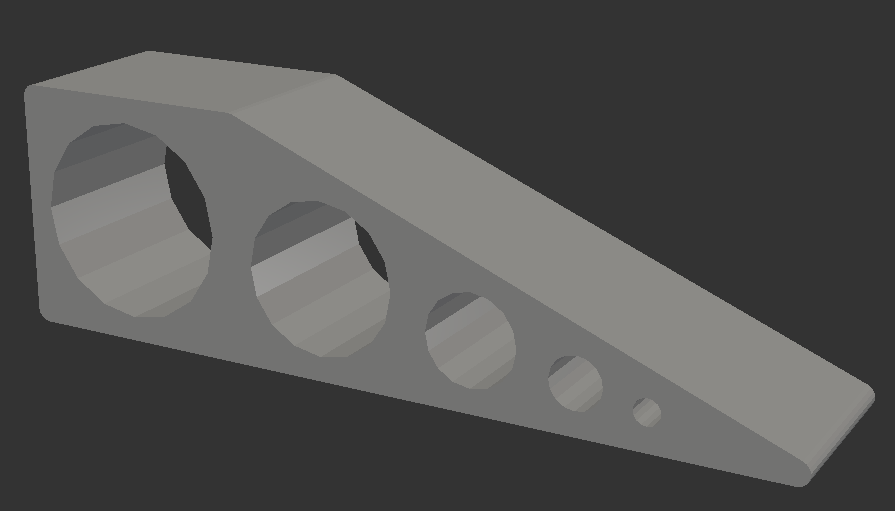
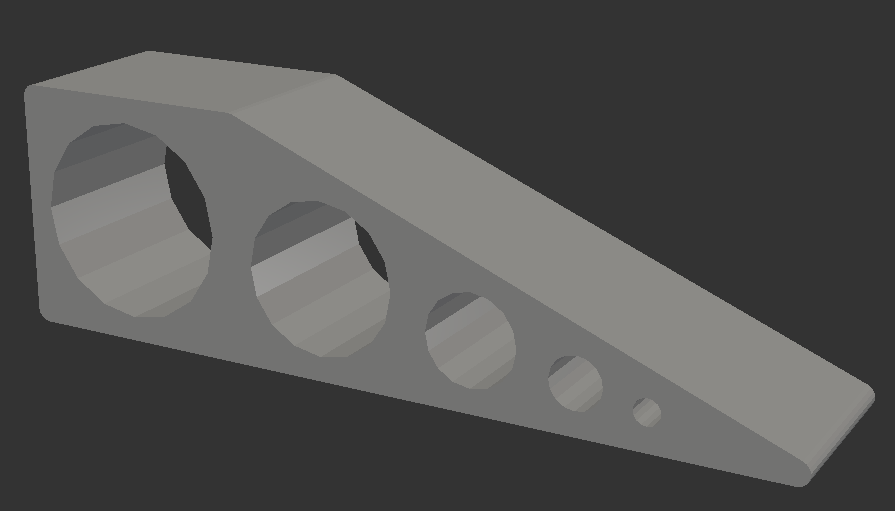
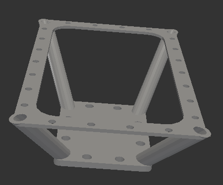
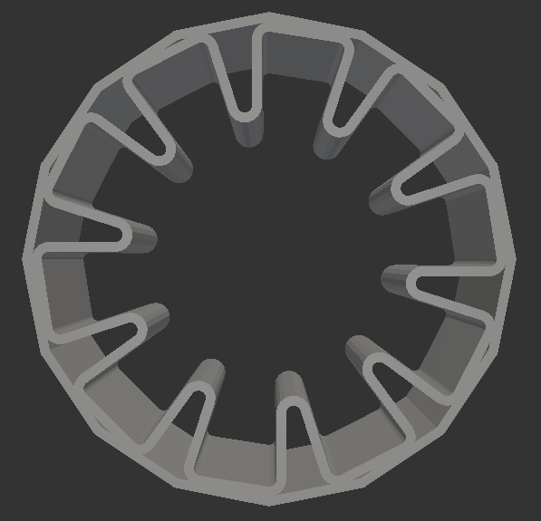
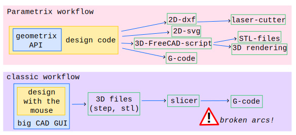
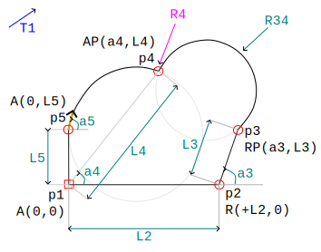

La prèz de Paramétrix

Parametrix
Parametrix
CAO en code pour l'open-hardware
Une solution JavaScript pour créer des formes 3D
 

 
Parametrix workflow
Approche simplifiée: - centrée sur la notion de contour (c.a.d 2.5D) - les procédés de fabrication efficaces sont 2D - les mécanismes robustes sont 2D - chaine d'outils CAO/FAO mieux controllée
Génération de fichiers 3D

> Des formes 3D décrites en JavaScript
> Un frontend qui abstrait les outils de CAD
> Un générateur de siteweb pour paramétriser les designs
Les principaux avantages de Parametrix:
1. Pérennité de vos modeles 3D
1.1. Parametrix est petit (10k LoC)
1.2. Parametrix est open-source
1.3. Une abstraction de plusieurs API d'outils CAO
Eviter les lock-in de vos designs 3D
2. Facilité la compatibilité avec les machines de fabrication digitales
Des contours faits de segments et d'arcs de cercles
comme le G-code
3. Une interface claire et structurée entre Designer et Maker
Une page HTML pour paramétriser, visualiser en 2D et exporter en 3D
4. Une API javascript
Votre modèle 3D est une recette écrite dans un fichier javacript
Parametrix en condensé
framework / éco-système : Parametrix librairie principale : Geometrix librairies de designs : Designix, Desi78, Desi82, ...
Passage en revue de l'interface graphique


L'API de Geometrix pour designer des formes 3D
L'API de Geometrix en bref
Example de code 
const ctr1 = contour(0, 0) .addSegStrokeR(param.L2, 0) .addSegStrokeRP(a3, param.L3) .addPointAP(a4, param.L4) .addSegArc(param.R34, true, true) .addCornerRounded(param.R4) .addPointA(0, param.L5) .addSegArc3(a5, false) .closeSegStroke();
3 types de paramètres - nombre - checkbox (i.e. boolean) - dropdown (i.e. enum)
Les contours sont composées exclusivement de: - segments de droite - arcs de cercle Idéal pour générer le G-code
Options possibles pour définir le prochain point
dans la définition d'un contour:
- Cartésien ou Polair
- Relative ou Absolue
3 possibilités pour définir un arc de cercle: - le rayon avec les booléens large/small et ccw/cw - un point intermédiaire - l'angle de la tangente au début ou à la fin de l'arc
Approximation des courbes quelconques: double arcs de cercles définis avec leur angles de tangentes de début et de fin de segment de courbe
Modifications des angles d'un contour: - Arrondi [Rounded] - Elargissement [Widened] - Elargissement avec l'accès [WideAcc]
- Définition d'une liste de figures
- Attacher chaque contour à une figure en tant que:
- principal [main]
- secondaire [second]
- ou dynamique [dynamics]
Définition d'une forme 3D
- Extrusion d'une figure orthogonalement ou en révolution
- Pivoter, translater puis combiner les sous-éléments
- Union
- Intersection
- Soustraction Parametrix génère des scripts 3D pour: - OpenSCAD ✔ - OpenJsCad ✔ - Freecad ✔ - SolveSpace - pythonOCC - CadQuery - OpenCascade.js - Three.js - glTF - X3D - ManifoldCAD
Fin de
la
présentation
de
Parametrix
Prêt pour créer votre propre librairie de designs?
npm create parametrix@latest tom07